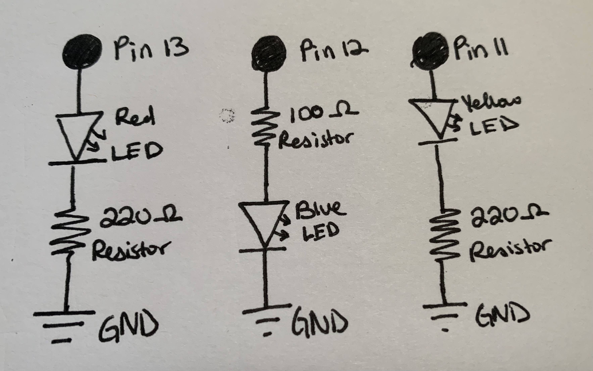
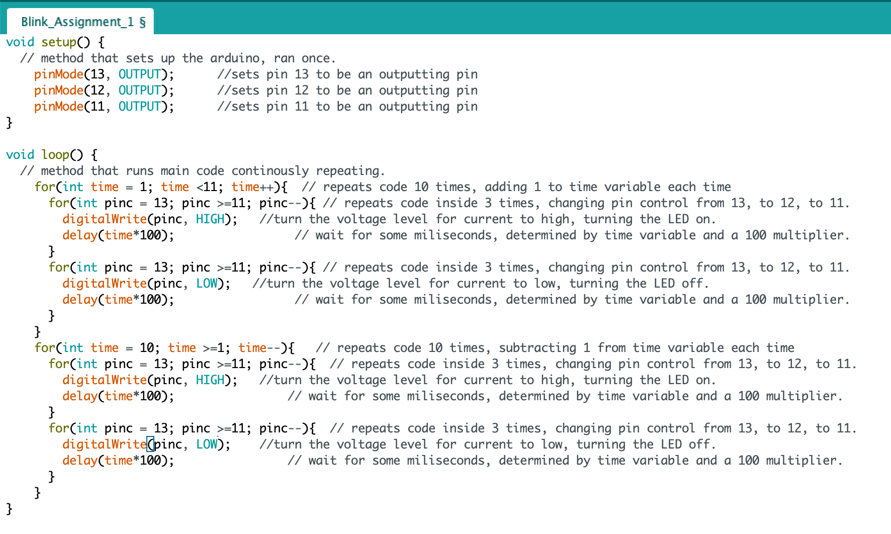
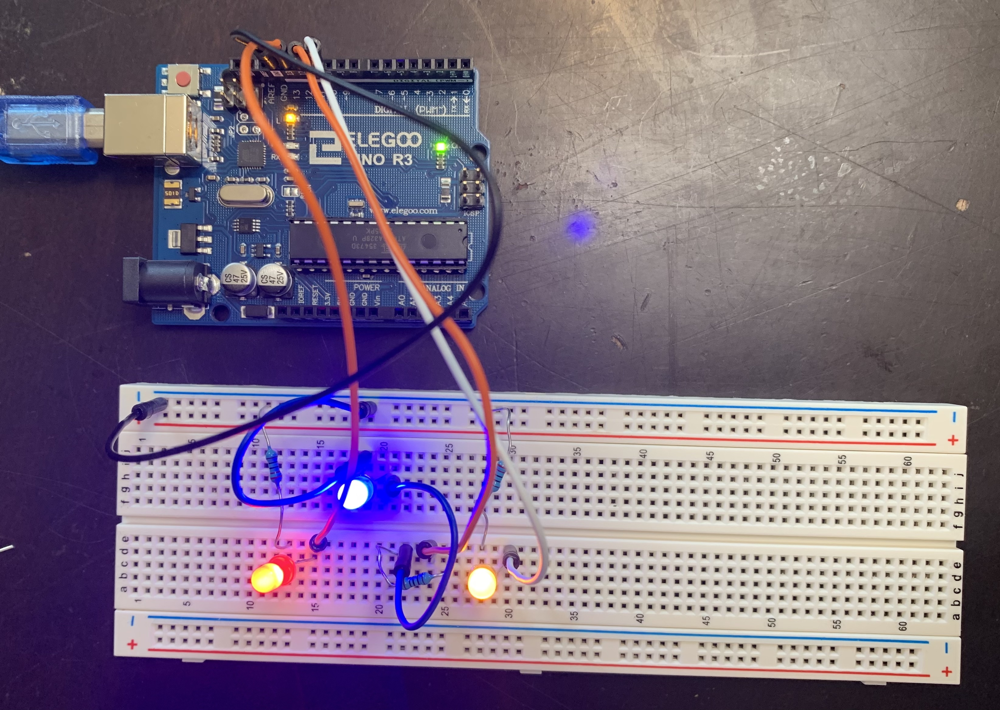

Anna's Assignment 1, Blink!

For this assignment, I had to make 3 LED's blink using our Arduino. Below is the documentation!
Schematic

Shown on the schematic are 3 pins on the Arduino with an LED and resistor attached to each of them, which are also connected to ground. These pins are 13, 12, and 11. The red, blue, and yellow LEDs are connected to pin 13, 12, and 11 respectively. Pin 12 has the order of resistor and LED reversed just to make it more visually interesting.
The schematic also shows the values of the resistors, which I determined by using V=IR and using the resistors I had that matched closest. For the red and yellow LEDs, as their voltage drop is 1.8V, the voltage that is being supplied is 5V, and the target current for LEDs is 20 mA, the resistors needed to reach that target current have to have a resistance of 160 ohms. As I only had 100 and 220 ohm resistors, I opted for 220 ohms as 100ohms would exceed the recommended current maximum of 30mA. Using V=IR, the current is then 14.5 mA. For the blue LED, as its voltage drop is 3.2V, the resistance needed for 20 mA is 85 ohms. I opted to use an 100 ohm resistor for this one as I wanted the brightness of the LEDs to all be close to the same, and 220 ohms would have made the blue significantly dimmer. The calculated current in this case is 17mA.
Code Snippet

void setup() {
// method that sets up the arduino, ran once.
pinMode(13, OUTPUT); //sets pin 13 to be an outputting pin
pinMode(12, OUTPUT); //sets pin 12 to be an outputting pin
pinMode(11, OUTPUT); //sets pin 11 to be an outputting pin
}
void loop() {
// method that runs main code continously repeating.
for(int time = 1; time <11; time++){ // repeats code 10 times, adding 1 to time variable each time
for(int pinc = 13; pinc >=11; pinc--){ // repeats code inside 3 times, changing pin control from 13, to 12, to 11.
digitalWrite(pinc, HIGH); //turn the voltage level for current to high, turning the LED on.
delay(time*100); // wait for some miliseconds, determined by time variable and a 100 multiplier.
}
for(int pinc = 13; pinc >=11; pinc--){ // repeats code inside 3 times, changing pin control from 13, to 12, to 11.
digitalWrite(pinc, LOW); //turn the voltage level for current to low, turning the LED off.
delay(time*100); // wait for some miliseconds, determined by time variable and a 100 multiplier.
}
}
for(int time = 10; time >=1; time--){ // repeats code 10 times, subtracting 1 from time variable each time
for(int pinc = 13; pinc >=11; pinc--){ // repeats code inside 3 times, changing pin control from 13, to 12, to 11.
digitalWrite(pinc, HIGH); //turn the voltage level for current to high, turning the LED on.
delay(time*100); // wait for some miliseconds, determined by time variable and a 100 multiplier.
}
for(int pinc = 13; pinc >=11; pinc--){ // repeats code inside 3 times, changing pin control from 13, to 12, to 11.
digitalWrite(pinc, LOW); //turn the voltage level for current to low, turning the LED off.
delay(time*100); // wait for some miliseconds, determined by time variable and a 100 multiplier.
}
}
}
My code includes a setup method which runs once and prepares the pins on the Arduino for use by designating them as outputs, and a loop method which runs repeatedly and tells the pins to change voltage, thus turning the LEDS on and off. The loop method has two outer for loops and each of those has two nested for loops. The two sets of nested for loops tell the LEDs to turn on with a delay in between each, and then turn off with a delay in between each. The delay is determined by the outer for loop's time variable, which tells how many hundreds of miliseconds of delay there will be. The first outer for loop increases the time variable by 1 each time until it reaches 10, and the second one decreases the time variable by 1 each time until it reaches 1.
Circuit Image and Operation GIF
